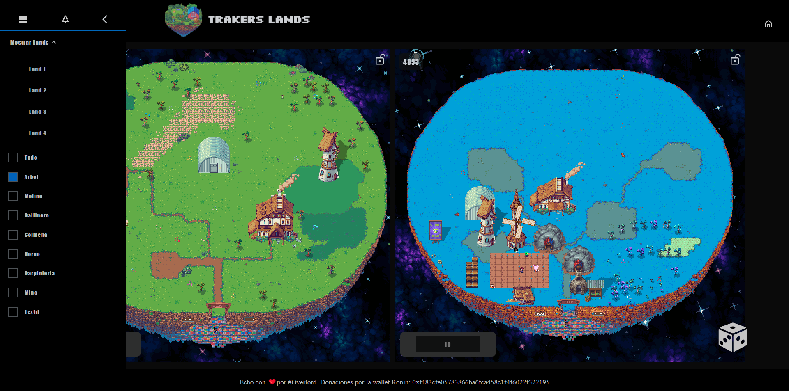

Seeker Pixels
¿Como funciona Traker lands?
Mostrar Lands:
Selecciona las lands del 1 al 4 que deseas ver, puedes buscar lands mediante el ID de una land.
Seleccionar Tipo de Lands:
Elige el tipo de lands que deseas ver entre una variedad de opciones, incluyendo árboles, molinos, gallineros, hornos, carpinterías, minas, textiles o todos los tipos disponibles.
Temporizador para arboles:
Crea un temporizador en horas para medir el tiempo hasta que un árbol crezca en el terreno seleccionado, y el temporizador se ajusta automáticamente dependiendo de la fase del arbol seleccionada.



© Echo con ❤️por #Overlord.